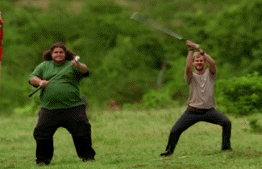
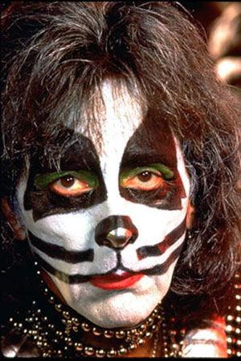
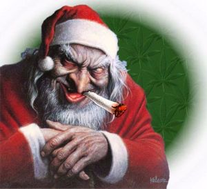

Perdidos
 De: La Frikipedia, la enciclopedia extremadamente seria.
De: La Frikipedia, la enciclopedia extremadamente seria.
 Siempre piensan en sobrevivir...
«Locke los mato a todos»
~ Jack Shephard compungido y sin aire despues de correr por su vida
«¿Inclusive a Kate?»
~ Sawyer preguntando una tonteria
«SI, Locke los mato a todos»
~ Jack Shephard reincidiendo en el anuncio
«¿Inclusive al Sumo(Hurley)?»
~ Sawyer preguntando otra tonteria
«SI, Locke los mato a todos»
~ Jack Shephard reincidiendo en el anuncio
«¿Tambien a Juliet?»
~ Sawyer preguntando otra tonteria
«¡¡¡LOS MATO A TODOS!!!»
~ Jack Shephard enojado
«¿A ti tambien, DOC??»
~ Sawyer preguntando lo obvio
«Todos estamos muertos»
~ Christian Shephard plagiando a Sexto Sentido
«Nadie existe, todo es nada»
~ Jacob buscando resolver un enigma del infinito

El capítulo piloto sería el más caro de la historia, pero con la cabecera no se escoñaron.
Reality Show con fuertes influencia de The Matrix y Evangelion que se emite por algún canal yanqui de televisión. Es tan real este Reality Show que muchos lo han tomado como una serie de televisión, y no solo como una serie de televisión común y corriente sino como una serie friki por antoniomasia. La cosa de esto es que te matan a un personaje principal a la mitad de una temporada y nunca te puedes hacer una idea de que es lo que va a pasar dentro de 5 minutos por lo que te dejan mirando la serie con la boca semi abierta y pasandonos horas debatiendo sobre lo que puede llegar a pasar. Seguramente nos encajaran un final horrible donde todas las conspiraciones y cosas que habíamos pensado no servían para una mierda. En fin, algo que seguro nos va a marcar peor que enterarnos que McGyver o de 4-8-15-16-23-42
En fin, la serie es bastante buena, la tia buena Kate esta para darle de aquí al 2015 y hay personajes como el gordo sudoroso o el calvo Locke que son realmente adorables (¿?)interesantes. Al que por más que lo mires y lo mires y no llegas a querer es al santurrón hijo de puta del médico, Jack que se pasa la vida queriendo follarse a Kate y peleándose con medio mundo.
El caso es que despues de sufrir un accidente de avion y estrellarse en una isla, sufren continuos ataques cerebrales en los que recuerdan su pasado. Si alguien se tropieza en la selva y cae sobre la hierba, tendra un ataque cerebral que le hara recordar media vida sin que para el pase el tiempo. Si alguien de los accidentados en la isla, habla con alguien, ATAQUE Cerebral, si orina... ATAQUE, y asi continuamente recordando como se pajeaban en su vida pasada (y presente, lo que pasa es que no se ve).
Personajes de la 1ª temporada
Piloto del 815 de Oceanic.
- Jack
ass: El Doctor "sensual",pelón Bueno y "musculoso" como pocos, salva vidas pero no recibe ni un beso a cambio. Algunos dirian que en realidad lo que le gusta es otra cosa. Se pasa la mitad de la serie llorando y es considerado el niño simbolo de los finales de temporadas. El pobre tampoco deja de chillar porque Sawyer que no es el protagonista es mucho más guapo y popular con las mujeres que él. Ademas de se cree el puto amo de la isla, toma las deciciones que le sale de su aparato reproductor masculino y no se esconde a la hora de repartir leches si es nesesario, ya que el doctor aspirina a montado una comuna marxista en la isla, pero todos le comen el ojal y bla bla bla.
- La tía buena: No podía faltar en una gran producción norteamericana como esta, se llama Kate, y está entre el doctor sensual y Sawyer. La verdad que la maciza no se aclara que banana(?) comerse aunque segun se rumorea ella es mas de naranjas y frutos secos. Manipula a los tios de la isla a su antojo ya que esta buena, y haver quien le dice que no con la cara de no romper un plato que pone la muy zorra.
- Sawyer: Es pintón y malhablado, encima no quiere a nadie (ni nadie le quiere a él), un verdadero hijoputa si los hay, todo lo contrario que el gordo sudoroso. Posible objeto de las fantasías del doctor. Es un mijito rico que anda normalmente sin polera pa exitar a la tia buena.
- El gordo sudoroso: Se llama Hurley, como las motos, es gordo, suda mucho y tiene mucha pasta, aparte de que nadie se explica por que coño no aldelgaza ni un puto gramo, aunque la verdad se la podría meter en el ojete puesto que esta en una isla en el medio de la nada. Es el pokemon del grupo, cae bien a todos

Hurley (el Gordo), cuando era pequeño.
- El negro "They took my son" : Tiene una jeta que ni te cuento, mal temperamento y un hijo que es medio rarito. Su mejor momento en la serie es demostrando sus dotes de tenor mientras grita el nombre del hijo durante mas de 4 capitulos de la segunda temporada (WAAAAAAAAAAAAAAALT!).

El Negro en un flasback sobre su hijo.
- El hijo del negro: Parece que tiene poderes mentales y todos lo miran con cara de "te tengo miedo", en algun momento anda todo mojado por el bosque lo que nos hace sospechar que nunca le enseñaron a sacarse la ropa para bañarse ni a hablar.
La caja de la posesion más preciada del Calvo.
- El calvo: Calvo cabrón y fanatico de los cuchillos y boy-scout con dos cojones, iba en silla de ruedas pero por alguna razon volvio a caminar. Desea sacarle el riñón a alguien por la noche, el muy psicópata. Se enfurece, y por eso jura matar a todos los jabalíes de la isla,por muy diabólicos y naranjas que sean. Es el que mejor se desenvuelve en la isla y posiblemente cuando no se le ve es que esta espiando a la china o a kate mientras se cambian
- El moro: Torturador profesional arrepentido. También es un fiel seguidor del Bricomania irakí donde aprendió a arreglar todo tipo de aparatos electronicos.
- El Chino: El muy Gilipollas ni siquiera habla inglés, encima la mujer le miente y ya de entrada se caga a palos con alguno y termina esposado. Un perdido si los hay, eso sí, sabe pescar por lo que es imporante en la serie.

El Chino cuando el Negro le roba el peluco.
- La China: Una perra. A esta le va el coquetear con todos los hombres para al final reagruparse con su marido. Siempre va con la ropa bien planchada comparándola con los otros personajes que hay en la isla que van llenos de mierda. Regenta un herbolario en la isla, y la muy boba no cobra nada (Y habla inglés, pero sólo en la intimidad, como Aznar).
- La Pija: La segunda tía buena, la Paris Hilton de la isla, se dedica a tomar el sol y echarse laca de uñas. Se enamora del moro y se quiere casar con él ,pero, como ya sabemos, aquí o te mata el humo negro o te pega un tiro alguien desquiciado, y el monstruo de humo estaba ocupado matando a Eko.
- El hermano de La Pija: tio flojito, parcialmente EMO que esta enamorado de La Pija que es su hermana. Es el lameculos de Locke y muere al caerse por un terraplen, cosas de la vida.
- El Hobbit drogadicto: Sujeto de una isla llamada Inglaterra que tenía una banda de "rock" llamada Drive Shaft y que piensa que es mas famoso que los Beatles y empieza su gira por toda Inglaterra por que no le alcanza para salir de la isla, también es un drogo que se mete heroína proveniente de virgenes y cartuchos de rollo de fotografía.
 El Hobbit Drogado, Charly. Cuando estaba en su banda de rock.
- La preñada: Tiene un bombo que ni el de la orquesta filarmónica de Berlín, le secuestra uno de los otros infiltrado y aparece a los dos capítulos en extrañas circustancias y con una amnesia que te cagas.
- Los Otros: espontáneos que se cuelan en el set de rodaje de la serie de vez en cuando y secuestran a los actores. Van en un barco y están liderados por Chanquete.
- El Otro infiltrado: Todos confundían su nombre con el de otro perdido y era el arrastrado del grupo, hasta que le pillaron y salío escopeteao, mató a la persona cuyo nombre creaba confusión con el suyo, secuestró a Claire, tuvo una o dos peleillas y se le acabó el cuento cuando el hobitt drogadicto le metío 4 tiros entre pecho y espalda.
- La Francesa loca: demente psicópata que ha pasado toda su puta vida en la isla , ¿he dicho que está loca?
- La vieja negra ausente: aparece en dos o tres capítulos de la primera temporada para rellenar y se dedica a mirar las olas mientras asiente con la cabeza, cree que su marido sigue vivo, y es otra de las arrastradas del grupo.
- El resto de tías buenas: incluye al resto del reparto femenino y a Aarón.
2ª temporada
Esta es la temporada en la que el 99,8% de la audiencia se desenchufa y manda a tomar por culo la serie por razones tan obvias como que el gordo todavía no haya adelgazado, sino que por el contrario, haya engordado o por que están hasta los huevos de escuchar los gritos que pega el negro para encontrar a su hijo o por la masa de humo negro, o por el chino del proyecto Dharma... vamos que los que acabamos perdidos de verdad somos los que vemos la serie.
Resulta que dentro de la escotilla había un sujeto llamado Desmond que lleva 3 años metiendo los numericos de los cojones en un ordenador para que no se acabe el mundo, lo cual tiene mucha lógica, este después de montar un numerito huye en un velero que nadie había visto hasta entonces.
Personajes de la 2ª temporada
- EKO: Afroamericano/africano/australiano/malayo superviviente del vuelo 815. Debido a que parece ser que es un cura, y que cumple el celibato, se fabrica un palo en la isla para pegar a gusto a los indígenas. Pasó 40 dias en silencio, mientras se le pasaba el dolor de su almorrana
Eko a lo Michael Jackson.
- Analulu: Chica con graves problemas para controlar su temperamento. Dispara en un arranque de mala ostia a la Pija y aunque su nombre lo parezca indicar, no es española, sino que procede de alguna isla perdida donde pegarse y romperse la boca es de buena educación. Posible objeto de las fantasías del doctor. Muere también.
- La escotilla: Lugar misterioso donde se cree que se encuentra Guillermo Puertas programando la nueva versión de Windows, por ello los protagonistas hacen lo imposible para poder entrar y detenerlo. Posible objeto de las fantasías del doctor (¿?).
- La computadora: Por suerte no tiene Windows, por que tienen que apretar una tecla cada tantos minutos y si lo tuviese seguro que se les cuelga y les pasa algo malo. Descubrimos que dentro está Ansar, intentando que todo vaya bien. Pero hay un error, e implosiona mientras Locke se ríe.
- Mostruo(Lostzilla): hijo secreto de Leticia Sabater que se dedica a asustar a los supervivientes y a comerse a los extras. Locke lo vió, pero su impresión fue tal que sufre amnesia desde entonces; más tarde, Eko también lo vio, como consecuencia se volvio negro. Es de humo negro, y se rumorea que ese humo ha salido de el hobbit drogadicto, el cual, como todos sabemos, esnifa coca extraída de vírgenes de porcelana. Está algo oxidado y lleva baratijas de gitana debido a los ruidos al acercarse a los que se va a merendar. Cuando aparece suena una trompetilla.
- Desmond: sujeto de experimentacion que sufre trastorno bipolar-compulsivo-megalómano, vive en la escotilla, y con vivir me refiero a dormir y hacerse pajas, porque el pobre no tiene ni una puta game boy. Para é todo el mundo es "colega".
- Libby: psicóloga psicópata que disfruta retorciendo piernas y poniendo cara de loca, Tiene el fetiche de tener sexo con hombres obesos. Esta es otra de las que se mueren a mitad de temporada.
- Cindy: azafata de vuelo, la secuetran.
- El "otro" que no es otro: Un hombre que por otras pelis se sabe que es malo, pero al que todos consideran Heidi, excepto el moro, el cual le tortura con sus extraños flashbacks cada dos por tres. Resulta que se lo encuentran en la selva, y en vez de arrearle como todo el mundo hace en Lost, le acogen. !Mal hecho! les traiciona y se lleva por delante a dos sin querer. Tiene varios nombres: Henry Gale, Ben y el otro.
- El Chino de los Videos de Orientacion: Cientifico que aparece en los videos de orientacion de las escotillas, pudo haber sido actor porno.
El Chino de los Videos de Orientacion orientando a los miembros de la Iniciatiba Dharma.

El Chino de los Videos de Orientacion viendo una peli porno.
Fauna de la isla
Entre los miles de ejemplares de animales que se pueden encontrar en la isla tropical destacan:
- El perro del hijo del negro: Un animalico que siempre esta limpio y reluciente como los de los anuncios de frostys para perros, se pierde unas cuantas veces, pero para eso esta el calvo y su silbato manufacturado.

Perro del hijo del Negro.
- Los osos polares: Lo normal en una isla desierta, como todo el mundo sabe es su hábiat natural, no se porqué os extrañáis tanto.
- Un caballo: Solo lo ve la tía buena y es negro, asi que tiene que tener cuidado con la masa de humo negro.
- La masa de humo negro: Su principal función es matar negros, que por algo es de ese color.
 Posible origen del Humo Negro.

Posible responsable del Humo Negro.
- Los jabalíes: El principal alimento de los perdidos, sobretodo de Hurley, que no estaría tan gordo si comiese chinas del río ¿Eh?
- Arañillas para dormir: Si te pican te quedas tieso tropecientas horas, hacen efecto en 0'2.
Iniciativa Dharma
Esta iniciativa no se sabe muy bien quien la forma, al parecer unos científicos locos que buscaban una forma de destruir a Dios se fueron a una isla secreta a descubrir la manera de hacerlo, pero Dios se entero y les envió un golpe de albóndiga, que derribo un avión. Lo cual fue fatal para la iniciativa porque les desbarato todos sus planes. Para saber mas sobre la iniciativa, ver la serie.
3ª Temporada
Ahora resulta que aquéllos espontáneos tan simpáticos que se dedicaban a raptar a las embarazadas y a robar las butifarras del campamento, tienen unos adosados allá, un poco al norte, entre las montañas de la dichosa isla. Y cómo no, como la vida ahí tiene que ser aburrida de cojones, porque ni siquiera tienen internet, al ver caer un avión del cielo, deciden mandar a un par de colgados para empezar a tocar los huevos a los posibles supervivientes (Haciendo gala de buena conducta).
Para más colmo, el del Kebab, el médico y los demás se meten el líos al intentar salvar al negrillo, el hijo del gañán, habiendo dejado, además, libre al líder de los espontáneos frikis (se le da a conocer como Furby, y a partir de ahí, se pasan todo el resto de la temporada entre rescates, espías, traiciones, semidesnudos y más ralladas mentales propias de la serie.
Personajes de la 3ª Temporada
- Furby: Tío con cara de buena persona y ojos como platos, pero que no dudará en violarte si ese es su deber.
- Jacob (Yeicob)(No, el de la biblia no): Resulta ser un fantasma que dicta las órdenes para los espontáneos (Qué poca personalidad). El Furby y el calvo de los chuchillos se enemistan porque resulta que éste puede escuchar la psicofonía emitida (Dios los cría y ellos se juntan). Se rumorea que le gusta disfrasarce de silla por las cabañaa.

Posible identidad de Jacob.
- Chulieta: Es una rubia de ojos azules que aparece llorando al principio, seguramente debido a que ninguno de los locos que habitan en la comunidad es capaz de satisfacerla. Es la mítica emisora de aquella famosa frase: "¿Y qué hay de mi ética, mi decencia y mi honradez? ¿Acaso no han pensado que yo uso mi coño para follar?". No hay que dejarse engañar, es una furcia con un alto cociente intelectual.
- Desmond: Ahora Desmundo se dedica a otros fines, como prevenir el futuro y salvar al Nazgûls que sobrevuelan la isla, y a veces tienden trampas en su forma "humo negro".
- Humo Negro (Nazgûls): No parará hasta haber sometido a juicio todas las patéticas vidas residentes en la isla. Es probablemente el mayor misterio de la serie, dejando a un lado el San Jacobo.
- Paulo y Nikki: Copuladores compulsivos asesinos de masas y estafadores. La mayoría de la gente se tiró al suelo al ver que la pava se enrollaba con un viejales director. Ya, ya sé que es lo típico, pero en fin... Se quedan paralizados, y como el médico no anda por ahí, que está en el campamento de verano, los entierran vivos porque son idiotas, y por supuesto, están remuertos.
- La hija de la francesa: ¿Por qué los otros son tan idiotas de dejarle con el nombre de nacimiento? Siguen llamándola Alex sin temer a que la loca llegue y se tome su venganza. Su novio tiene cara de retrasado y se llama Karl.
- Karl: Los espontáneos, viendo que el chico no daba más de sí, deciden intentar lavarle el cerebro en la Sala 23 para ver si de él se puede aprovechar algo. Gran error. Le mete la lengua a la hija de la francesa.
- Doctor X: En la serie es llamado Mikhail Bakunin (originalidad al poder), lejos de ser un hombre que remueva a las masas, es un maldito lisiado ruso que se pasa las horas muertas en la estación de "La Llama" (Llamada así porque Locke le acaba prendiendo fuego). Controla todo el tema de comunicación en la isla. lineas eróticas. Ah, y tiene más vidas que un gato (ya le han disparado, electrocutado, le arrojaron una flecha he hizo estallar una granada bajo el agua y mata a Charlie (chapate el spoiler)).
- Cara de loco (Ethan Rom): Es el que secuestra a Claire, aparece en los flashbacks de Juliet consolándola al perder a su marido. Vende pañuelos y suele lucir un hilillo de baba cayéndole de la comisura de los labios.
- Pene (Perdón, Penny): Es la novia de Desmond, fea como ella sola, pero parece ser simpática. Es tan tonta que se deja la pasta en intentar localizarle, cuando seguramente esté en el monasterio más cercano o en el bar de ultras de la esquina.
- Goodwin: ¿Os acordáis del tipo al que Analulú ensarta? Resulta que se acostaba con Julliet, tal vez por eso al perderlo lloraba, porque seguramente era el único hombre dentro de Los Otros que se conoce tuviera miembro viril.
- Padre del calvo: le roba el riñon al calvo y despues lo tira por la ventana de su apartamento.Le roba a cualquier persona que se encuentre en su camino. Lo bueno es que al final Locke lo mata.
Personajes de la 4ª Temporada
- El chino estafador: Es uno de los que vinieron en el carguero, es un coreano/chino/americano que es hermano del pibe que hizo sexto sentido porque puede hablar con los muertos. También es estafador porque le quiere sacara al Benjamin "simepre tengo todo planeado" Linus 3.2 millones de no se que, porque no 3 millones,o 3 millones y medio, es original el loco.
- Dexter(Daniel): También vino en el carguero, es muy inteligente ya que pudo ayudar a Desmond en el pasado y en el presente al mismo tiempo. Y se quiere follar a la colo pero esta no le da pelota.
- La colo: Pelirroja que no sabe en donde nació, y por eso cree que naciò en la isla, ta re loca la piba.
- Frank: Es el piloto del helicopetero, lo usan como taxi, los lleva del carguero a la isla y de ahi a todas las partes de la isla, se le hizo mierda el helicoptero cuando se quedo sin combustible el helicopetero y la isla desaparecio.
- Minkowski: Un tipo loco que le contagió la enfermedad de viajar en el tiempo a Desmond, sumandole a este el poder de ver el pasado a predecir el futuro, todo un tipo magico.
- Martin Keamy: Un verdadero hijueputa, le pega un tiro a todo lo que ve demostrando su hombria, ya sea mujeres adolesentes, el humo negro, capitanes de cargueros, etc. (me explico??)
- Kevin Johnson: Es el negro "they took my son" pero con otro nombre, es tipo superman que se peina diferente para que no lo reconoscan. Volvio para morir, ya que un arma, un navaja suiza, etc. no lo podian matar.
5ª Temporada
Ahora que se movió la Isla, los que quedaron comenzaron a viajar en el tiempo, y solo con la ayuda de los que se fueron pararía, claro ya se que es demasiado fantastico pero toda serie debe tener algo de fantasía, como por ejemplo que ahora esten todos en 1977 y solo La China, y Furby, esten en el presente real, ahora todo se trata de volver al año 2007 con una bomba para que nadie muera y así darnos un final donde todo lo que vimos en 5 años sirva para una puta mierda.
Personajes
- Horace: Un tío gordo y sudoroso que vive en los 70, más concretamente en la iniciativa Dharma. Causa un rastro de sudor inimitable. No te recomendaría seguir ese rastro.
- El perlao de La Llama: Ni puta idea de como se llama, es judío y le gustan los
africanos chupándosela. Creador del bunker, su único propósito en la vida es ser el protagonista.
- Mini Furby: Claro ejemplo de que no todo mejora con el tiempo. En su infancia, Furby era un pequeño niño con gafas y pelo engominado al que solo le importaba irse con Chanquete.
- El Richar: El chacho de la serie. Se gasta todos sus ahorros en liftings y lo único que hace es venderle malacatones a Furby y Locke.
- La madre de Dexter: típica abuelita inglesa que quiere darle a todo el mundo una taza de té. Ayuda a Desmond cuando este viajo al pasado. Utiliza al retraca de su hijo para sus fines y le dispara en la espalda cuando era joven y Dexter aún no había nacido. Posible fuente de fantasías del doctor.
- Carlitos: Magnate inglés, padre de Penny y enemigo de Desmond. Es tó malo y envió el carguero en la 4ª temporada. Solía ser Chanquete, hasta que llegó Furby. Es el padre de Dexter.
- Sisar: Hermano secreto del irakí torturador. Solía ser actor porno hasta que se atascó en el baño del avión y acabó en la isla sin darse cuenta y dejando el culo del mismo color de su cara. Llama a todo el mundo ``mafrén´´. Acaba escopeteado por Furby.
- Lalana: Zorra
barata que se tira al irakí torturador para pagarse unos kebabs. Llega a la isla escondida en la funda de la guitarra que lleva el gordo BabyShaq. Tiene mucho calor y pregunta siempre por un sitio con sombra.
- Jeremy Bentham: El nombre del Calvo cuando salió de la isla e intentar convencer al resto que se haía ido de la isla, pero como todo sabemos como es, no lo logró y por ello el Enano maldito lo mató y simuló que todo fue un suicidio, volvió a la isla en el avión 316 en un ataud.
- El Calvo que no era el Calvo: Es el némesis de Jacob, que cuando se estrella el segundo avión todo el mundo pensó que era Locke, pero cuando Jacob murió todos los televidentes se dieron cuenta que el verdadero Calvo estaba tirado en la isla ante todos los presentes muerto.
- Phil: Era el lameculos de LaFleur en los barracones , hasta que lo torturó y por ello lo único que quiere es atraversarle un escopetazo pero muere aplastado por un andamio.
- Jim LaFleur : Es sólo Sawyer, y se cambió el nombre para pasar desapercibido en la iniciativa Dharma y ser jefe de seguridad y follarse a Juliet con una escusa.
6ª Temporada y última
Último capítulo =
Se vé que los guionistas, al complicarse la vida, no sabian acabar la serie, así que se inventaron un final absurdo, en el cuál el tal Jacob "resucita" y decide repartir los trabajos.
Al final le toca al médico (era de esperar) ser el substituto de Jacob, y Jack, Kate, Harley Davidson, John (que recordemos es el malo ahora y en realidad está muerto, pero que el "humo negro" le ha robado el cuerpo), y el Ben van a una "cueva mágica" de la cual sale una luz de "la nada", bueno, de dentro, y deciden meter al Desmond para abajo de la cueva. Desmond ve una piscinilla, se baña en ella, saca una piedra de dentro y "parece que muere", Jack va a buscar a Desmond, los demás se las piran en avión, Jack va a matar al Lock, que parece ser que ahora se puede matar, lo mata, y vuelve otra vez a la "cueva mágica" a tapar el agujero de la picinilla.
Al final, todos se van en avión, pero el Jack se queda estirado en medio de la isla y viene el perro, sale un primer plano del ojo de Jack y se acaba Perdidos (Sale el cutre logo)
Tras 6 años de seguir la serie, miles de frikis se suicidan al descubirir que TODO era una metafora.
Tipico Capítulo de Lost
(En una isla del culo del mundo, hay un montón de personajes sudorosos. Un médico mojigato -"MM"- está hablando con una pecosa buenorra -"PB"-)
- Médico mojigato: Kate, voy a ir a hablar con los otros.
- Pecosa buenorra: Voy contigo.
- MM: no, es peligroso.
- PB: vale, entonces te diré que no voy, pero cuando no mires me iré igual.
- MM: vale, mientras no vuelvas a follarte a Sawyer, me da igual.
(Se acercan un chico malo buenorro -"CMB"- y un caso grave de obesidad mórbida -"CGOM"-)
- Chico malo buenorro: ¿qué estás diciendo, médico mojigato?
- MM: me llamo Jack.
- CMB: venga ya, si hasta el gordo ceboso sabe que eres un mojigato.
- CGOM: eh, a mí no me metas, que yo soy un acojonado y no quiero pelearme con nadie (aunque es verdad que es un mojigato y hasta yo me doy cuenta).
- PB: Jack va a ir a hablar con los otros.
- CMB: ¿para qué?
- MM: voy a decirles que nos dejen salir de la isla a cambio de devolverles a su jefe.
- CMB: demasiado tarde, Locke se lo llevó cuando no mirabas.
- MM: ¿cómo puede ser?
- CMB: es que además de mojigato eres gilipollas, por eso todos estamos esperando a que te despistes para traicionarte. De hecho, en cuanto te pires, voy a echar otro polvete con Kate.
- PB: es verdad.
- MM: mierda, me cabrearía y te golpearía, pero soy demasiado mojigato. En lugar de eso, iré a hablar con mi amiga, la rubia tetona, para que me ayude.
- CMB: vale, nosotros vamos a echar un polvo.
- CGOM: y yo me voy a tener delirios esquizofrénicos. Luego comeré toda la comida de Dharma hasta que me reviente el estómago.
(Primer plano del caso grave de obesidad mórbida, con un sonido de misterio que-te-cagas pasamos a flashback donde lo vemos flipando en un psiquiátrico con un amigo imaginario. Si es la cuarta temporada, cambia "flashback" por "flashforward", y "amigo imaginario" por "amigo muerto").
(en otro lugar de la isla, entre árboles, un calvo pirado -"CP"- habla con un enano hijoputa -"EH"- que está atado)
- Calvo pirado: Ben, dime todos los secretos de la isla.
- Enano hijoputa: te los diré, pero sólo si me desatas, me traes un jabalí asado y me la chupas un poco.
- CP: lo de desatarte y lo del jabalí vale, pero no te la chupo.
- EH: de acuerdo, pero si le das un besito, te diré también de dónde sale el humo que mata gente, qué significan los números chungos, y qué tipo de tinta es mejor para pintar números a los conejos.
- CP: de acuerdo, trato hecho.
(CP está a punto de desatarlo, pero entonces aparece un irakí torturador -"IT"-)
- Irakí torturador: ¡alto! No lo desates, te está engañando, en realidad, saber lo de los conejos no te sirve para nada.
- CP: ¡es verdad! ¡Sólo querías que le diera un besito a cambio de nada! Qué manipulador eres.
- IT: no te preocupes, ahora nos dirá la verdad.
- CP: ¿cómo?
- IT: voy a torturarlo un poco. Luego me sentiré culpable y juraré no torturar a nadie más. Luego cambiaré de idea y lo torturaré otra vez. Luego me sentiré culpable... Y así sucesivamente hasta que nos diga algo.
- EH: ¿y la rubia pija de las primeras temporadas (-"RPDLPT"-)? ¿Ya te olvidaste de ella?
- IT: no conseguirás distraerme. Estuve triste, es verdad, pero ya se me pasó. La perspectiva de volver a torturar a alguien siempre me pone de buen humor.
- CP: Sayid, espera.
- IT: ¿Qué?
- CP: voy a liberarlo.
- IT: ¡pero si es un cabrón manipulador! ¿Por qué quieres liberarlo?
- CP: porque soy gilipollas.
(aparece un niñato negro todo mojado -"NNTM"-)
- Niñato negro todo mojado: ¡un momento, yo voy a revelaros la verdad!
- CP: ¡Níñato negro! ¿Qué haces aquí todo mojado?
- NNTM: vengo a deciros que ya sé todos los secretos. Me metí en internet, y leí todos los spoilers de las próximas dos temporadas.
- EH: ¡no, cállate!
- NNTM: el secreto de la isla es...
(se apaga todo, aparecen las letras de "Lost", y el expectador impaciente -"EI"- emite un grito desolador)
- EI: ¡aaaaargh! ¡Cabrones!
FIN
Final alternativo
http://www.youtube.com/watch?v=RDLDdCuEWLM&feature=popular
Enlaces externos
Wikis
Autor(es):
- Krusher
- Nexo
- Fordus
- Camvoya
- Haakjvork
- Jedi luis
- Pancracio
- AGF
- Aque
- Masterfriki
Frikipedia 2005-2016, Licencia
GFDL 1.2 - Extraído por FrikiLeaks